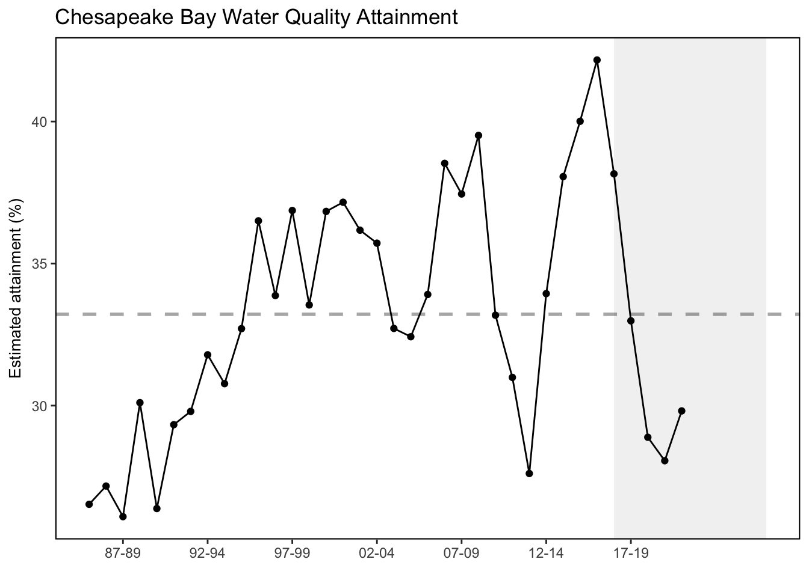

SMART Indicator Report: Chesapeake Bay Water Quality Standards Attainment
1 Descriptive Section
1.2 Indicator name
Chesapeake Bay Water Quality Standards Attainment
Includes variable(s): chesapeake bay water quality attainment
1.4 Indicator visualization
The indicator provides an integrated measure of Chesapeake Bay’s water quality condition (Figure 1). In 2020-2022, 29.8% of all tidal water segment-DU-criterion combinations are estimated to have met or exceeded applicable water quality criteria thresholds. Overall, the indicator has a positive and statistically significant trend between 1985-1987 and 2020-2022, which shows that Chesapeake Bay is on a positive trajectory toward recovery. This pattern has been statistically linked to total nitrogen reduction, indicating responsiveness of attainment status to management actions implemented to reduce nutrients from the Chesapeake Bay watershed [5]. Figure 1. Time series of the multimetric indicator score for estimated Chesapeake Bay water quality standards attainment for each 3-year assessment period between 1985-1987 and 2020-2022.

2 SMART Attribute Section
2.1 Indicator documentation
2.1.1 Are indicators available for others to use (data downloadable)?
Yes
2.1.1.1 Where can indicators be found?
Data: https://noaa-edab.github.io/ecodata/index.html
Description: https://noaa-edab.github.io/catalog/ches_bay_wq.html
Technical documentation: https://noaa-edab.github.io/tech-doc/ches_bay_wq.html
2.1.1.2 How often are they updated? Are future updates likely?
[need sequential look at datasets for update frequency. Future requires judgement]
2.1.1.3 Who is the contact?
Qian Zhang, qzhang@chesapeakebay.net
2.1.2 Gather indicator statistics
2.1.2.2 Length of time series, start and end date, periodicity
General overview: 3-year assessment periods between 1985-1987 and 2020-2022.
Indicator specifics:
Indicator | EPU | StartYear | EndYear | NumYears | MissingYears |
|---|---|---|---|---|---|
chesapeake bay water quality attainment | MAB | 1985 | 2020 | 36 | 0 |
2.1.2.3 Spatial location, scale and extent
General overview: Chesapeake Bay
Indicator specifics:
Indicator | EPU |
|---|---|
chesapeake bay water quality attainment | MAB |
2.1.3 Are methods clearly documented to obtain source data and calculate indicators?
Yes
2.1.3.1 Can the indicator be calculated from current documentation?
Criteria attainment assessment Monitoring data of DO, chlorophyll-a, and water clarity/SAV were processed and compared with water quality criteria thresholds according to different designated uses (DUs). These DUs are migratory spawning and nursery (MSN), open water (OW), deep water (DW), deep channel (DC), and shallow water (SW), which reflect the seasonal nature of water column structure and the life history needs of living resources. Station-level DO and chlorophyll-a data were spatially interpolated in three dimensions. Salinity and water temperature data were used to compute the vertical density structure of the water column, which was translated into layers of different DUs. Criteria attainment was determined by comparing violation rates over a 3-year period to a reference cumulative frequency distribution that represents the extent of allowable violation. This approach was implemented using FORTRAN codes, which are provided as a zipped folder. For water clarity/SAV, the single best year in the 3-year assessment period was compared with the segment-specific acreage goal, the water clarity goal, or a combination of both. For more details, refer to the Methods section of Q. Zhang et al. (2018). Indicator calculation The multimetric indicator quantifies the fraction of segment-DU-criterion combinations that meet all applicable season-specific thresholds for each 3-year assessment period from 1985-1987 to 2017-2019. For each 3-year assessment period, all applicable segment-DU-criterion combinations were evaluated in a binomial fashion and scored 1 for “in attainment” and 0 for “nonattainment”. The classified status of each segment-DU-criterion combination was weighted via segments’ surface area and summed to obtain the multimetric index score. This weighting scheme was adopted for two reasons: (1) segments vary in size over four orders of magnitude, and (2) surface area of each segment does not change with time or DUs, unlike seasonally variable habitat volume or bottom water area (USEPA 2017). For more details, refer to the Methods section of Q. Zhang et al. (2018). The indicator provides an integrated measure of Chesapeake Bay’s water quality condition (Figure 1). In 2017-2019, 33.1% of all tidal water segment-DU-criterion combinations are estimated to have met or exceeded applicable water quality criteria thresholds, which marks the best 3-year status since 1985-1987. The indicator has a positive and statistically significant trend from 1985-1987 to 2017-2019, which shows that Chesapeake Bay is on a positive trajectory toward recovery. This pattern was statistically linked to total nitrogen reduction, indicating responsiveness of attainment status to management actions implemented to reduce nutrients in the system. Patterns of attainment of individual DUs are variable (Figure 2). Changes in OW-DO, DC-DO, and water clarity/SAV have shown long-term improvements, which have contributed to overall attainment indicator improvement. By contrast, the MSN-DO attainment experienced a sharp spike in the first few assessment periods but generally degraded after the 1997-1999, which has implications to the survival, growth, and reproduction of the migratory and resident tidal freshwater fish during spawning and nursery season in the tidal freshwater to low-salinity habitats. The status and trends of tidal segments’ attainment may be used to inform siting decisions of aquaculture operations in Chesapeake Bay.
2.1.4 Are indicator underlying source data linked or easy to find?
Data are publicly available (see Data Sources below).
2.1.4.1 Where are source data stored?
The multimetric indicator required monitoring data on dissolved oxygen (DO) concentrations, chlorophyll-a concentrations, water clarity, SAV acreage, water temperature, and salinity. SAV acreage has been measured by the Virginia Institute of Marine Science in collaboration with the CBP, which is available via http://web.vims.edu/bio/sav/StateSegmentAreaTable.htm. Data for all other parameters were obtained from the CBP Water Quality Database. These data have been routinely reported to the CBP by the Maryland Department of Natural Resources, Virginia Department of Environmental Quality, Old Dominion University, Virginia Institute of Marine Science, and citizen/volunteer monitoring initiatives.
2.1.4.2 How/by whom are source data updated? Are future updates likely?
Qian Zhang, qzhang@chesapeakebay.net
[likelihood of source data updates requires judgement, enter by hand]
2.2 Indicator analysis/testing or history of use
2.2.1 What decision or advice processes are the indicators currently used in?
To protect the aquatic living resources of Chesapeake Bay, the Chesapeake Bay Program (CBP) partnership has developed a guidance framework of ambient water quality criteria with designated uses and assessment procedures for dissolved oxygen, chlorophyll-a, and water clarity/submerged aquatic vegetation (SAV) [2]. To achieve consistent assessment over time and between jurisdictions, a multimetric indicator was proposed by the CBP partnership to provide a means for tracking the progress in all 92 management segments of Chesapeake Bay [[3]; [4]). This indicator has been computed for each three-year assessment period since 1985-1987, providing an integrated measure of Chesapeake Bay’s water quality condition over the last four decades. The multimetric indicator required monitoring data on dissolved oxygen (DO) concentrations, chlorophyll-a concentrations, water clarity, SAV acreage, water temperature, and salinity. SAV acreage has been measured by the Virginia Institute of Marine Science in collaboration with the CBP, which is available via http://web.vims.edu/bio/sav/StateSegmentAreaTable.htm. Data for all other parameters were obtained from the CBP Water Quality Database (http://www.chesapeakebay.net/data/downloads/cbp_water_quality_database_1984_present). These data have been routinely reported to the CBP by the Maryland Department of Natural Resources, Virginia Department of Environmental Quality, Old Dominion University, Virginia Institute of Marine Science, and citizen/volunteer monitoring initiatives. Monitoring data of DO, chlorophyll-a, and water clarity/SAV were processed and compared with water quality criteria thresholds according to different designated uses (DUs). These DUs are migratory spawning and nursery (MSN), open water (OW), deep water (DW), deep channel (DC), and shallow water (SW), which reflect the seasonal nature of water column structure and the life history needs of living resources. Station-level DO and chlorophyll-a data were spatially interpolated in three dimensions. Salinity and water temperature data were used to compute the vertical density structure of the water column, which was translated into layers of different DUs. Criteria attainment was determined by comparing violation rates over a 3-year period to a reference cumulative frequency distribution that represents the extent of allowable violation. This approach was implemented using FORTRAN codes, which are provided as a zipped folder. For water clarity/SAV, the single best year in the 3-year assessment period was compared with the segment-specific acreage goal, the water clarity goal, or a combination of both. For more details, refer to the Methods section of Zhang et al. (2018). The multimetric indicator quantifies the fraction of segment-DU-criterion combinations that meet all applicable season-specific thresholds for each 3-year assessment period from 1985-1987 to 2020-2024. For each 3-year assessment period, all applicable segment-DU-criterion combinations were evaluated in a binomial fashion and scored 1 for “in attainment” and 0 for “nonattainment”. The classified status of each segment-DU-criterion combination was weighted via segments’ surface area and summed to obtain the multimetric index score. This weighting scheme was adopted for two reasons: (1) segments vary in size over four orders of magnitude, and (2) surface area of each segment does not change with time or DUs, unlike seasonally variable habitat volume or bottom water area (U.S. Environmental Protection Agency, 2017). For more details, refer to the Methods section of Zhang et al. [5].
2.2.2 What implications of the indicators are currently listed?
Patterns of attainment of individual designated uses are variable. According to Mann-Kendall trend analysis extended from Zhang et al. [5], dissolved oxygen criterion attainment (migratory fish spawning & nursery) showed a statistically significant long-term decline. By contrast, deep water dissolved oxygen criterion attainment and shallow water bay grasses / water clarity criterion attainment showed statistically significant long-term improvements, which may be an indication of increasing resilience in the bay ecosystem since the Bay restoration began.
2.2.3 Do target, limit, or threshold values already exist for the indicator?
Target, limit, or threshold terms detected
2.2.4 Have the indicators been tested to ensure they respond proportionally to a change in the underlying process?
No
3 SMART rating
Category | Indicator | Element | Attribute | Rating | ElementRating | OverallRating |
|---|---|---|---|---|---|---|
Habitat-Physical | Chesapeake Bay Water Quality Standards Attainment | Specific | Described | 1 | 0.6666667 | 0.6333333 |
Habitat-Physical | Chesapeake Bay Water Quality Standards Attainment | Specific | Units | 1 | 0.6666667 | 0.6333333 |
Habitat-Physical | Chesapeake Bay Water Quality Standards Attainment | Specific | Spatial | 1 | 0.6666667 | 0.6333333 |
Habitat-Physical | Chesapeake Bay Water Quality Standards Attainment | Specific | Uncertainty | 0 | 0.6666667 | 0.6333333 |
Habitat-Physical | Chesapeake Bay Water Quality Standards Attainment | Specific | Methods | 1 | 0.6666667 | 0.6333333 |
Habitat-Physical | Chesapeake Bay Water Quality Standards Attainment | Specific | Code | 0 | 0.6666667 | 0.6333333 |
Habitat-Physical | Chesapeake Bay Water Quality Standards Attainment | Measurable | Available | 1 | 1.0000000 | 0.6333333 |
Habitat-Physical | Chesapeake Bay Water Quality Standards Attainment | Measurable | Online | 1 | 1.0000000 | 0.6333333 |
Habitat-Physical | Chesapeake Bay Water Quality Standards Attainment | Measurable | Contact | 1 | 1.0000000 | 0.6333333 |
Habitat-Physical | Chesapeake Bay Water Quality Standards Attainment | Measurable | SourceDat | 1 | 1.0000000 | 0.6333333 |
Habitat-Physical | Chesapeake Bay Water Quality Standards Attainment | Measurable | SourceAvail | 1 | 1.0000000 | 0.6333333 |
Habitat-Physical | Chesapeake Bay Water Quality Standards Attainment | Measurable | SourceContact | 1 | 1.0000000 | 0.6333333 |
Habitat-Physical | Chesapeake Bay Water Quality Standards Attainment | Achievable | Tested | 0 | 0.0000000 | 0.6333333 |
Habitat-Physical | Chesapeake Bay Water Quality Standards Attainment | Achievable | Sensitivity | 0 | 0.0000000 | 0.6333333 |
Habitat-Physical | Chesapeake Bay Water Quality Standards Attainment | Achievable | TimeLag | 0 | 0.0000000 | 0.6333333 |
Habitat-Physical | Chesapeake Bay Water Quality Standards Attainment | Relevant | Advice | 1 | 1.0000000 | 0.6333333 |
Habitat-Physical | Chesapeake Bay Water Quality Standards Attainment | Relevant | Implications | 1 | 1.0000000 | 0.6333333 |
Habitat-Physical | Chesapeake Bay Water Quality Standards Attainment | Relevant | TargThresh | 1 | 1.0000000 | 0.6333333 |
Habitat-Physical | Chesapeake Bay Water Quality Standards Attainment | Timebound | Frequency | 1 | 0.5000000 | 0.6333333 |
Habitat-Physical | Chesapeake Bay Water Quality Standards Attainment | Timebound | Updated | 0 | 0.5000000 | 0.6333333 |
3.1 Comments
[Fill below by hand once above data complete]
3.1.1 Additional potential links to management in addition to uses listed above
3.1.2 What additional work would be needed for the Council to use the indicator?
3.1.3 What issues are caused if there is a gap or delay in data underlying the indicator